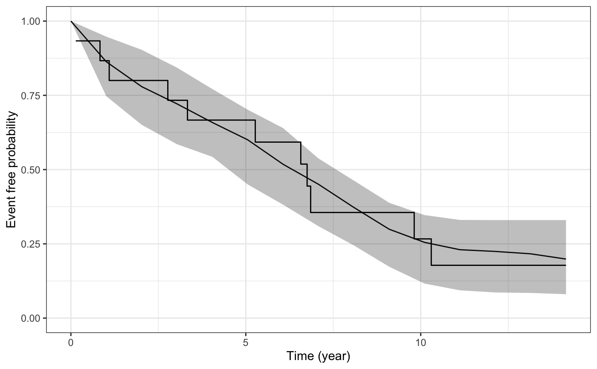

This function plots the estimated marginal survival function based on draws from the posterior predictive distribution of the fitted joint model, and then overlays the Kaplan-Meier curve based on the observed data.
Usage
ps_check(
object,
check = "survival",
limits = c("ci", "none"),
draws = NULL,
seed = NULL,
xlab = NULL,
ylab = NULL,
ci_geom_args = NULL,
...
)Arguments
- object
A fitted model object returned by the
stan_jmmodelling function. Seestanreg-objects.- check
The type of plot to show. Currently only "survival" is allowed, which compares the estimated marginal survival function under the joint model to the estimated Kaplan-Meier curve based on the observed data.
- limits
A quoted character string specifying the type of limits to include in the plot. Can be one of:
"ci"for the Bayesian posterior uncertainty interval (often known as a credible interval); or"none"for no interval limits.- draws
An integer indicating the number of MCMC draws to use to to estimate the survival function. The default and maximum number of draws is the size of the posterior sample.
- seed
An optional
seedto use.- xlab, ylab
An optional axis label passed to
labs.- ci_geom_args
Optional arguments passed to
geom_ribbonand used to control features of the plotted interval limits. They should be supplied as a named list.- ...
Optional arguments passed to
geom_lineand used to control features of the plotted trajectory.
See also
posterior_survfit for the estimated marginal or
subject-specific survival function based on draws of the model parameters
from the posterior distribution,
posterior_predict for drawing from the posterior
predictive distribution for the longitudinal submodel, and
pp_check for graphical checks of the longitudinal submodel.
Examples
if (.Platform$OS.type != "windows" || .Platform$r_arch != "i386") {
# \donttest{
if (!exists("example_jm")) example(example_jm)
# Compare estimated survival function to Kaplan-Meier curve
ps <- ps_check(example_jm)
ps +
ggplot2::scale_color_manual(values = c("red", "black")) + # change colors
ggplot2::scale_size_manual(values = c(0.5, 3)) + # change line sizes
ggplot2::scale_fill_manual(values = c(NA, NA)) # remove fill
# }
}
